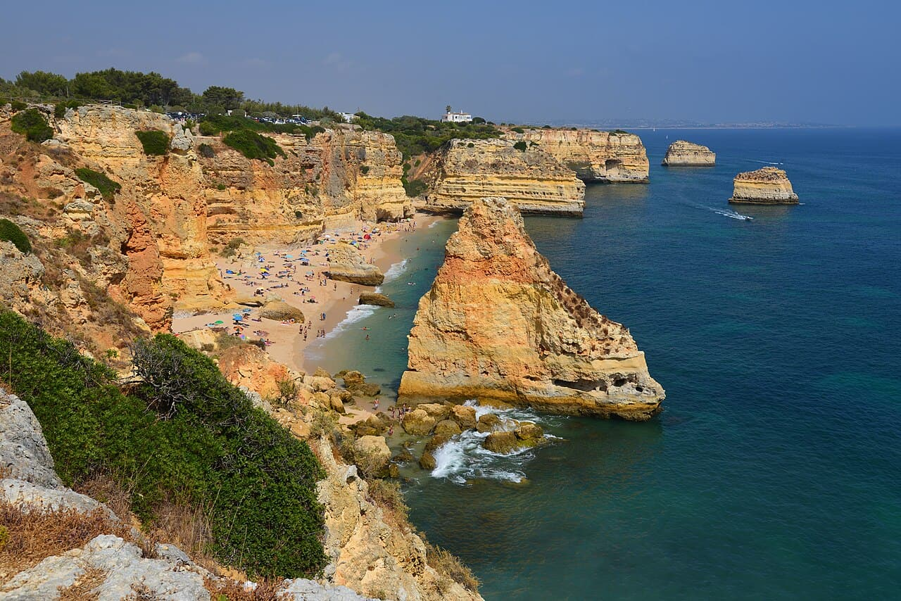

Praia da Marinha
Algarve, Portugal · baignade, snorkeling, kayak

Falaises ocre et arches naturelles au-dessus d’une eau cristalline : joyau de l’Algarve pour la baignade et le kayak.
- Lieu
- Algarve, Portugal
- Niveau
- Débutant
- Activités
- baignade, snorkeling, kayak
- Type d'eau
- Mer / océan
- Coordonnées
- 37.09, -8.41 (position approximative du secteur)
Dangers à connaître
- Accès par un escalier raide.
- Houle possible près des arches.
Le conseil d'Ocean Buddy
Va voir les arches en kayak quand la mer est calme.
Ouvrir dans Ocean Buddy Télécharger sur l'App Store
Source : Description historique Ocean Buddy · vérification externe en attente.